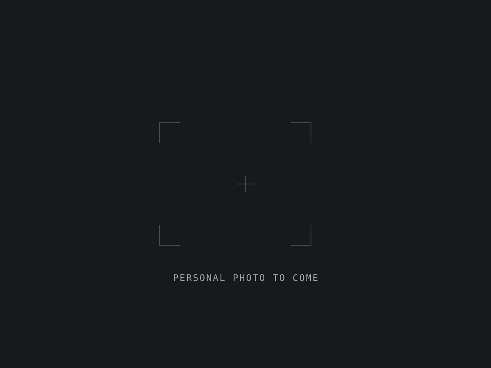

Robotics / Mechatronics
Damian
Szydlowski.
Robotics, mechatronics, and a curiosity for how things work.
A place for the things I build and the things I learn — across engineering, work, and life behind the camera.
engineering / making / photography
01 / Me
Curiosity,
put into practice.
Robotics, mechatronics, and a curiosity for how things work.
A place for the things I build and the things I learn — across engineering, work, and life behind the camera.
My background
02 / Background
Background
-
Dates to comeWorkProfessional experienceMore details
Role and company to come
Details about my work and responsibilities will be added here.
Entry in progress -
Dates to comeEducationEducation & trainingMore details
Programme and institution to come
Details about my studies and areas of focus will be added here.
Entry in progress -
Dates to comeMilestoneAdditional experience or educationMore details
A work, education, or training milestone can be added here.
Placeholder — add your details -
Dates to comeMilestoneAdditional experience or educationMore details
A work, education, or training milestone can be added here.
Placeholder — add your details -
Looking aheadNextAnd much more to come!More details
This timeline will keep growing.
03 / Projects
From idea to assembly.
Projects from work, school, and my own explorations.
Project placeholders — the real designs and their stories are being prepared.
05 / Connect
Let’s connect.
A project, a photograph, or an idea to explore.